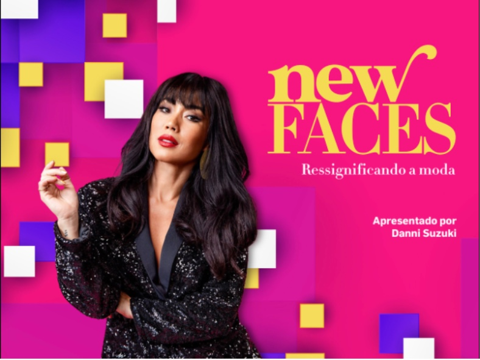

portfolio
Logger e assistente de edição
Trabalhou como logger e operadora de câmera (2021–2022) na Play9, trabalhando em videocasts como o Quem Pode, Pod, com apresentação de Giovanna Ewbank e Fernanda Paes Leme, para o canal Gioh, além de trabalhar em projetos dos canais de YouTube da Prime Video, Geração R e da própria Play 9. Atualmente trabalha como logger em campanhas publicitárias e clipes, sendo o mais recente o clipe da cantora Majur, Tudo Maré.
Trabalhou também na Play9 como assistente de edição, atendendo aos canais de influenciadores da agência durante a pandemia (2020). Além disso, foi assistente de edição para os reality shows Beleza GG, para o Canal E! (segunda e terceira temporadas) e New Faces, apresentado por Danni Suzuki, também para o Canal E! (primeira e segunda temporadas). Fez a série documental Passaporte Feminino, do canal Lifetime. Ainda como assistente de edição trabalhou nas campanhas políticas para prefeitura de Renata Souza (2020) e Talíria Petrone (2024), ambas candidatas pelo PSOL.


